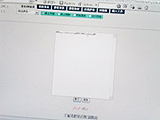
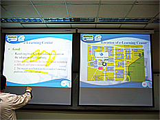
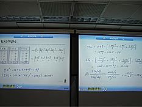

The University's vision on teaching and learning is to use Information Technology (IT) to provide excellent teaching and learning environment. The most important project of the University in the past eight
years is the construction of state-of-art e-learning environment; include wireless-everywhere, e-classroom, SCORM-compliant e-Learning system, etc. In October 2006, only five master degree e-Learning
programs passed MOE’s accreditation, and two of them are offered by CCU. CCU is also the only university in Taiwan that has an e-Learning center which provides advanced technologies for teaching and
learning.
2007 HP Technology for Teaching Higher Education Project at CCU
Project Title: e-Helper for minority and handicapped students in Mathematics Principal Investigator:Ren-Hung Hwang, Pao-Ta Yu Department:Department of Computer Science and Information
Engineering
Project Overview
In this project, HP tablet PCs are used to (1) improve Effective e-Learning courseware of mathematic and Engineering courses (2)improve learning environment for handicapped student (3)improve learning performance
of minority students (4)develop effective dual-coding teaching style.
Motivation
(1)
E-Learning courses have become a more effective teaching model in CCU. However, most of the courseware are developed using flash. Although multimedia, include text, image, video, audio, etc,
can be integrated, it is still not suitable for mathematical courses. Our study has shown that every stroke of handwriting of mathematic equations plays an important role on students'
construction of their knowledge of mathematics. Therefore, a new authoring tool is needed to develop e-learning courseware on Tablet PC because it is easier to write on Tablet PC.
(2)
We have a handicapped student in our department who has difficulties on handwriting, especially for mathematics. For each examine, we assigned a TA to help him translate his oral answer into
handwriting. This is not a very effective solution. Actually, he is able to use computer to type if appropriate tools are prepared for him. However, it is still very difficult to type
mathematic symbols or equations. A web-based tool is needed to allow him to generate mathematical equations and symbols by typing ASCII strings or using mouse clicks.
(3)
Due to some changes in higher education in Taiwan, we have observed that students' performance in CCU becomes bipolar. About 15% students have learning problems. A preliminary study shows
that they get frustrated and give up the course quite early, especially in mathematical courses. They can survive if early remedy is provided. However, instructors have difficulties on
diagnosing their problems based on their homework. A web-based tool is needed to help instructors better diagnose their misconceptions.
(4)
Most of instructors use projector to present their courseware while still need whiteboard to write additional information in a dark environment. If each classroom could equip with dual projectors
such that textual/handwriting and multimedia information can be displayed simultaneously would improve the teaching quality. Tablet PC is a good device for handwriting.
Goal and Objectives
Goal: Utilize IT technology on learning and teaching to pursue excellence in education
Objectives:
HP Tablet PCs will be used to achieve following objectives:
(1)
The process of handwriting of mathematics has found to be very important for students to follow the thinking of the instructor. Therefore, a new tool, called Mimic Builder, will be developed.
Mimic Builder can smoothly record the handwriting of mathematics of instructors on the Table PC. E-Learning courseware will be developed. Students get better understanding of the courseware
by seeing every stroke of the instructor’s handwriting.
(2)
A new tool, called WebMath, will be developed to help handicapped students who have difficulties on writing math equations to write mathematics homework or take mathematics examinations using
HP Tablet PCs. The tool can help handicapped students to finish his homework and examine on line without TA’s help. For a student with malfunction of short-term memory, recorded lectures
also help him listen to the lectures repeatedly easily.
(3)
A web-based multimedia meeting center (MMC) software will be used as a diagnosis tool to help instructors to understand the misconceptions of selected students in the Linear Algebra class.
MMC records every event of how a student develops his answer, including the ones that were erased. This tool helps the diagnosis of misconceptions.
(4)
Based on the dual-coding theory, each e-class is equipped with dual projectors/screens such that textual and multimedia information can be displayed simultaneously. The combination of textual/handwriting
and multimedia inspires students' whole brain learning.
Expected Results
(1)
Effective e-Learning courseware in mathematics: A new authoring tool, mimic builder, will be developed and it will be used to develop e-learning courseware, include Calculus, Statistical
Science, Linear Algebra, and RF Circuit Design. ADDIE design model will be adopted and the courseware will be accredited by Ministry of Education. Both summative and formative evaluation
will be performed during the class. Effectiveness of the new courseware design will be evaluated through students' learning outcomes. Performance criteria will be focused on students'
problem solving capability on applying their knowledge and skills on mathematics. Assessment methods will include surveys, questionnaires, specially developed exams, homework, exercises,
quizzes, focus group, and behavioral observations.
(2)
Improving learning environment for handicapped students: Integrated into our e-Learning platform, the WebMath tool is designed to help handicapped students to use Tablet PCs to write their
math homework and examinations on line and instructors can grade the homework and examinations on line. Without the help of TAs, handicapped students can do/take their homework and examinations
without interference. Evaluation on the effectiveness of this tool is done through following assessment methods: evaluation of students' homework and examinations, questionnaires on the
usage of the tool and effect of typing answer directly, and behavioral observations.
(3)
Improving learning performance of minority students: This strategy will be tried out in the Linear Algebra course first. Minority students will be given Tablet PCs to write their math exercises
and homework using the multimedia meeting center software on our e-Learning system. One additional TA is assigned to each course to help the diagnosis of students' misconceptions. Effectiveness
of this strategy will be evaluated mainly on the improving of the learning outcomes of these minority students. Not only would we like to see these students can get higher grade to pass
the course, but also we would like to see the improvement of their knowledge and skill on applying Linear Algebra.
(4)
Effective dual-coding teaching style: Dual-coding teaching style uses dual projectors to display textual/handwriting and multimedia courseware simultaneously. Workshops on how to apply dual-coding
theory to help students' whole brain learning will be held and selected instructors will be given Tablet PCs. The fuzzy system course is selected as the trail course. Effectiveness of dual-coding
teaching style will be evaluated through the learning outcomes of students in this class. Assessment methods will include surveys, questionnaires, exams, homework, and behavioral observations.
Impact on Student Learning
For the deep analysis on learning effect, we only focused on objectives (3) and (4). For objectives (1) and (2), I will just shortly report its quantitative results.
(1)
Five course wares are developed using Mimic Builder: Calculus, Radio Frequency Circuit Design, Linear Algebra, Quantitatively analysis-Educational Statistics, Financial Accounting. All of
these five course wares have been accredited by the e-Learning accreditation center of Taiwan’s Ministry of Education.
(2)
The WebMath is helpful to the handicapped student on writing mathematics homework and examines. With the help of TAs, the handicapped student is able to listen to the lectures repeatedly
in his dormitory. Unfortunately, the handicapped student has dropped out of the University due to his bad health condition.

(3)
We analyzed the learning effective of students participated in this project and taken the Liner Algebra course in Fall 2007. There were 60 students in that class. After the first mid-term
exam., students with low achievement were asked if they want to participate the project. Fifteen students were chosen to be in experimental group. Each of these students was given a HP
table PC. They were asked to write their homework using the MMC tool on the table PC. TAs of the course analyzed their answers which were written step by step and figured out possible
misconceptions of each student. The instructor lectured again on common misconceptions. One of the students said that “I was not very used to writing homework step by step using the Table
PC. Later on, I realized that it is very helpful to diagnose my misconceptions. Now, I am very used to using Table PC and this project is really a big help to my learning in Linear Algebra.
I hope this project could keep going such that more students could benefit many more students.” One of the TAs said that “Examining students’ homework written in step by step manner using
MMC is a great help to understand what has been misunderstood by students. For example, when the instructor explained the relation of subspace and its complement space, all students thought
they understood the concept, so no one asked a question in the class. However, when they wrote the homework, it becomes clear that some students do not understand the sum of dimensions
of subspace and its complement space should be equal to the dimension of the original space.” Among the 15 students participated in the project, one of them dropped out due to personal
reason. Therefore, we analyzed the learning effect based on the rest 14 students. There were three mid-term examinations and one final examination. Table 1 shows the comparison of learning
achievement of the control group and experimental group. From Table 1, we can observe that the mean score of students in the experimental group (32.43) is significantly lower than that
of control group (65.93)(t=-8.920, p
<0.01). That is, there is a significant difference between the mean score of experimental group and control group. After the first mid-term, students in experimental group were treated using methodology aforementioned. After the second mid-term, although
the mean score of the experimental group is still lower than the control group, but there is no significant difference between these two groups. That is, the mean score of students in
the experimental group has been improved.
Table 1 Comparison of examination scores of experimental group and control group
Experimental group (using HP Table PC)
(N=14)
Control group
(does not use Table PC) (N=46)
mean
standard deviation
mean
standard deviation
Independent samples t-test
First mid-term (experiment starting point)
32.43
6.94
65.93
22.16
t= -8.92**
Second mid-term
45.04
22.88
52.21
24.76
t= -0.97
Third mid-term
64.57
15.55
73.78
16.64
t= -1.84
Final exam
45.68
16.87
56.49
25.48
t= -1.49
Final score
54.43
11.55
64.72
13.75
t= -2.54*
*p<0.05, **p<0.01
In order to further understand the improvement of learning achievement of students in the experimental group, we further examine their performance between different examinations. Since the
level of difficulty is not consistent among different examinations, z-score is applied to students’ scores. As we can observe from Table 2, their scores of second mid-term, third mid-term,
final examination, and final score are all better than that of the first mid-term, and all have reached significant differences (t=-3.63, p
<0.05; t=-2.54, p<0.05; t=-3.54, p<0.01; t=-2.31, p<0.05).
Table 2 Comparison of students’ scores among different examinations within the experimental group
Experimental group (N=14)
z-score
Dependent Samples t-test
First mid-term vs. Second mid-term
-1.06 v.s. -0.23
t= -3.63*
First mid-term vs. Third mid-term
-1.06 v.s. -0.42
t= -2.54*
First mid-term vs. Final exam.
-1.06 v.s. -0.34
t= -3.54**
First mid-term vs. Final score
-1.06 v.s. -0.57
t= -2.31*
Second mid-term vs. Third mid-term
-0.23 v.s. -0.42
t= 0.65
Third mid-term vs. Final exam.
-0.42 v.s. -0.34
t= -0.34
Final exam. vs. Final score
-0.34 v.s. -0.57
t= 2.31*
*p<0.05, **p<0.01
(4)
The following analysis on learning effect on dual projectors/screens is based on following paper: Chen, Y.C., Chang, T.W., & Kuo, F.O. (2008). Classroom learning in a dual-screen-based environment.
Paper presented at ED-Media 2008 Conference, Vienna, Austria, June 30-July 4, 2008. (Prof. Chen is one of the Co-PIs of this project and is responsible for learning effect analysis.)
Dual-Screen-Based Environment: In order to improve the traditional learning environment, we designed a dual-screen learning environment. The dual-screen-based environment
is provided by two projection systems to display two VGA signals from instructors’ Tablet PC. One VGA signal shows the PowerPoint slides of teaching materials and the other signal displays
another blank PowerPoint slides allowing instructors to write down the notes and show to the students when they use a tablet PC. In order to display two VGA signals from the Tablet PC,
three essential components, an extended-VGA adapter, a multi-display system, and a dual-projection system, should be provided in this multimedia learning environment. The dual-screen
presentation system was set up in more than 10 classrooms in National Chung-Cheng University.


Participants:Sixty one subjects from two classes of the course “Introduction of Educational Statistics” class in spring 2007 took part in this study. These two classes were
graduate level and were assigned to two experimental conditions. One class (twenty four students) was assigned to the dual-screen learning environments (Dual-screen group), while another
class (thirty seven students) was taught in a traditional way with whiteboards (Whiteboard group). Both classes were taught with the same instructor and the same content of statistical
concepts for hypothesis testing, z and t testing for single samples, and power. In the dual-screen classroom, the learning content was shown on the left side screen with PowerPoint presentation.
The key points, instructor’s hand writing, and the calculation process were shown on the right side screen. The instructor was also allowed to do the hand writing on the left side screen
on the PowerPoint slides. While in the traditional classroom, the instructor wrote down the same learning content and the calculation process as well on the whiteboard.
Procedures: This study went through five steps. First, before all the students started the learning activity, they were asked to take a pre-test regarding their knowledge
about the learning content that they would learn. Following the pretest, students were taught the statistical concepts of hypothesis testing, z and t testing for single samples, and power
and did the exercises during the instruction. After the instruction, all students were asked to fill in a questionnaire of self-efficacy for statistics and reflections. For students who
were situated in the dual-screen environment, they were also asked some open-ended questions regarding the use of dual-screen in the classroom. Then students took an exam to test what
they learned. In addition to students, the instructor was also interviewed after the experiment.
Data collection: The data collected in this study were pre-test, post-test, and self-efficacy scores as quantitative data. The measurements of pre-test and self-efficacy
were treated as control variables. All the measurements were submitted to statistical analysis to explore the effect of dual-screen presentation on student learning performance. Both
Students’ and the instructor’s perceptions regarding the use of the dual-screen presentation system in the classroom were coded and transcribed as qualitative data in this study.
Results: The effect of dual-screen presentation on learning performanceTable 1 shows the results of post-tests for each group. Students in the Dual-Screen group (Mean=85.26,
SD=2.01) gained higher score than those in the Whiteboard group (Mean=83.58, SD=1.91).
Table 2 Comparison of students’ scores among different examinations
within the experimental group
Source
Number
Mean
SD;
Dual-Screen
24
85.26
2.01
Whiteboard
37
83.58
1.91
Total
61
To examine the impact of dual-screen presentation on students’ performance, an ANCOVA was conducted and two variables of pre-test and self-efficacy were treated as covariates. Table 2 revealed
that no significant main effect on student performance ((F(1, 57)=0.096, p>0.05). Students did not perform differently in these two groups.
Table 2 ANCOVA analysis for the post-test
Source
SS
df
MS
F
Sig.
Intercept
7138.29
1
7138.29
68.84
0.00
Self-efficacy
582.82
1
582.82
4.12
0.047
Pre-test
427.43
1
427.43
5.62
0.021
Group
9.96
1
9.96
0.096
0.758
Error
5910.85
57
103.70
Students’ perception regarding the dual-screen presentation Although the statistical analysis did not show the significant effect of dual-screen presentation on students’
performance, students who learned in the dual-screen environment showed great appreciation on the use of dual-screen presentation. All the students in the dual-screen condition liked
this system. Firstly, this system allowed the presented materials more organized and clearer, which helped students understand the content more. One student (A11) explained that the PowerPoint
slides (on the left side) gave him a clear idea and content structure. He could distinguish the points that the instructors wrote down and the major content messages. In addition,
with the spilt of content slides and the calculation processes on another slide, students were able to make references between these two. For example, A20 said while she could not quite
understand the calculation, she was able to go back and forth between the main ideas on the PowerPoint slide and the slide of calculation process. Thirdly, since the projection screens
were put on a higher place compared to the traditional whiteboard, students could see messages more clearly. Especially, with the use of projector, the layouts of content messages were
brighter and clearer compared to the whiteboards. Most students even recommended that the instructor should use the dual-screen presentation system in the future.
Instructor’s perception about using the dual-screen presentation system The instructor showed great interest after using the dual-screen presentation system. She indicated
several advantages of using this system. Firstly presenting the teaching materials with PowerPoint slides is a more efficient and organized way for teaching statistics. When she used
the PowerPoint slides, she could show the concepts step by step. With the advantage of tablet PC, she was able to write down supplemental information and calculation process on the screen.
Before she used this system, every time when she wanted to write down something else with the use of PowerPoint slides, she always had to go to the whiteboard to write the points down.
By doing so, students sometimes were confused since they had to see the messages back and forth between the PowerPoint presentation and the whiteboard. In addition, with another
blank slide, the instructor said she was able to show the calculation process clearly and students could compare the process with the formula or other important messages. The instructor
also found that students were drawn more attention on her teaching when she used this system. However, the interface might not easy to use, the instructor mentioned. She indicated
that it took some time to get familiar with the interface. When she used the interface to switch the screens, the interface was not intuitive enough to deal with. She had to click several
buttons before she got the slides that she wanted. During the instruction, the lag time of switching screens may get in the way of the instruction flow.
Impact on Teaching
(1) Better elearning courseware on Mathematic and Engineering course. (2) Better presentation style on classroom
Courses Impacted
(1) elearning courses: Calculus, Statistics, Linear Alegbra, RF Circuit Design (2) Many courses that taught in e-classroom (with dual projectors)
Participation
Professors: Ren-Hung Hwang Pao-Ta Yu Wei-Ta Chu Nacy Y. Chen
Teaching Assistants:
Students:
Contact Information
Ren-Hung Hwang Professor and Chair Department of Computer Science and Information Engineering National Chung Cheng University Email: rhhwang@cs.ccu.edu.tw WWW: ~rhhwang
Hand writing on Tablet PC: Students use tablet PC to write their homework in the Linear Algebra course. Through MMC, their handwritings were recorded and examined by TAs later. Teachers use table PC to do many tasks: (1) develop their e-Learning courseware (2) remedial teaching misconceptions of Linear Algebra through MMC (3) presentation in the e-classroom with dual-screen.
Software/Hardware developed:
(1)
Mimic Builder: Record the audio, cursor action (hand writing) and slide synchronously in the PowerPoint environment. A 2-layer slide design technique also lets the teaching/recording
process more smoothly.
(2)
Extended-VGA adapter: The Extended-VGA adapter enables instructors to connect any monitor, LCD or projector to instructors’ PC or notebook. Instructors can use it as an extended
desktop or as a large / different display for the main screen. The general PC or notebook only has one VGA output while the extended-VGA adapter which is compatible with USB 2.0 can provide
the PC or notebook another VGA output.